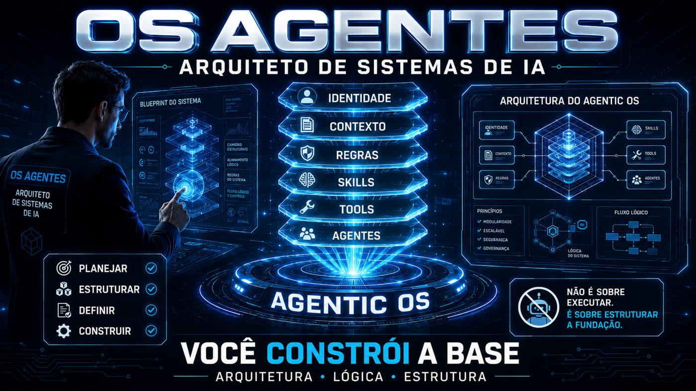
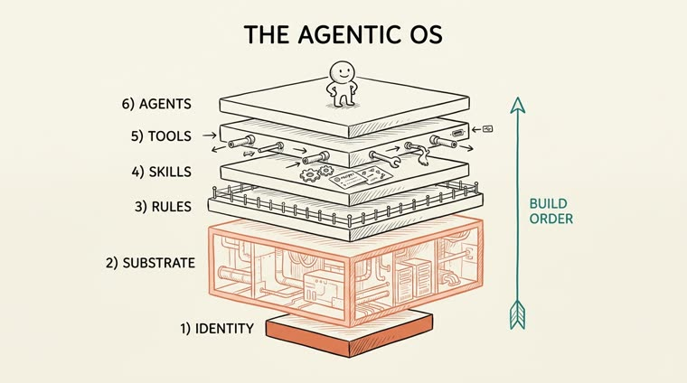
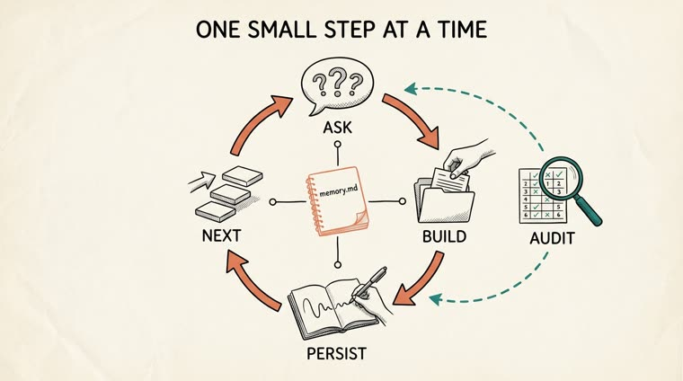
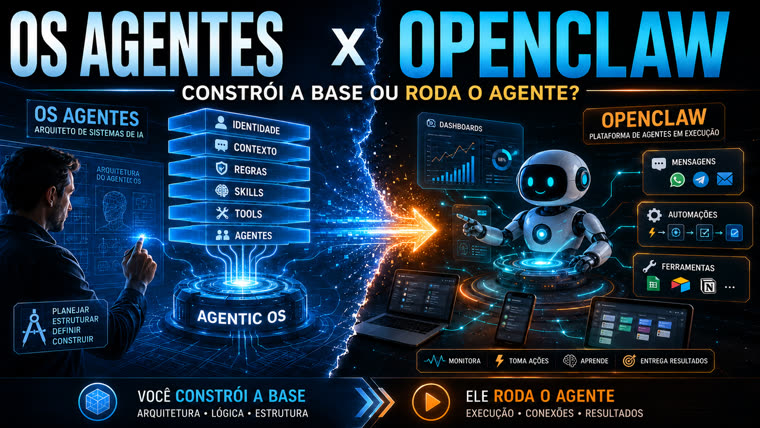

Uma skill que te guia, passo a passo, na construção do seu próprio OS agêntico — um sistema de arquivos que entende o seu objetivo e trabalha por você. Você não precisa saber programar; a skill faz o trabalho técnico, você só toma as decisões.

Você diz aonde quer chegar, ela faz duas ou três perguntas em português claro, e então constrói os arquivos e pastas de verdade pra você, explicando o que fez e por quê. Sessão após sessão, ela lembra exatamente onde você parou.
Treina Identidade, Substrato, Regras, Skills, Ferramentas e Agentes na ordem que realmente funciona — nunca todas de uma vez.
Fala como gente. Quando um termo técnico é inevitável, vem com uma frase curta e uma analogia do dia a dia. Assume que você nunca abriu um terminal.
Se você marca um campo como privado, ela nunca escreve aquele valor na pasta — guarda no lugar uma referência que não te identifica.
A Identidade é a fundação, o Substrato (os bastidores) é a maior camada, e os Agentes ficam no topo — só depois que tudo abaixo deles está firme. A ideia central: um OS agêntico é, na maior parte, encanamento. O modelo de IA é os 20% baratos.
| # | Camada | O que é | Mora em |
|---|---|---|---|
| 1 | Identidade | A alma. Quem é este OS, quem ele serve, do que ele se recusa a fazer. | CLAUDE.md |
| 2 | Substrato / Contexto | Os bastidores. O conhecimento destilado em que o OS roda. A maior camada. | substrate/ |
| 3 | Regras & Hooks | As cercas. Restrições preto-no-branco e reflexos automáticos. | rules/ |
| 4 | Skills | Os verbos conquistados. Tarefas repetíveis empacotadas para rodar igual toda vez. | skills/ |
| 5 | Ferramentas / Conexões | Os fios para fora. Conexões somente-leitura e bem delimitadas a fontes de dados reais. | tools.md |
| 6 | Agentes | Papéis com julgamento que orquestram as skills. | agents/ |
Sem dependências, sem chaves de API, sem etapa de build.
O treinador roda como uma skill dentro do Claude Code.
# instale a skill numa pasta qualquer cp -r skills/os-agentes ~/.claude/skills/
Qualquer pasta vazia (ou já existente) que você queira transformar num OS agêntico.
Não precisa estar polido. A skill refina com você nas primeiras perguntas.
Comandos reais, na ordem em que você normalmente os usa.
Copie a pasta da skill para o diretório de skills do Claude Code.
cp -r skills/os-agentes ~/.claude/skills/ # fica disponível em qualquer pasta
Dentro da pasta que você quer transformar num OS, diga o seu objetivo em português claro.
/os-agentes start Quero nunca mais perder o prazo de um cliente
A cada resposta sua, ela constrói os arquivos de verdade e explica o que fez.
/os-agentes next # vai para a próxima camada não terminada e treina ela
Quando você já sabe o que quer treinar primeiro.
/os-agentes layer identity|substrate|rules|skills|tools|agents
O mapa de progresso vem direto da memória — nada se perde entre sessões.
/os-agentes status
Pontua todas as seis camadas em relação ao seu objetivo e te dá os três próximos movimentos de maior alavancagem, escritos em OS-AUDIT.md.
/os-agentes audit
Explica o que a skill faz e mostra todos os comandos disponíveis.
/os-agentes help
/os-agentes start Eu vivo perdendo prazos de cliente e quero nunca mais atrasar uma entrega — a skill faz três perguntas curtas (pra quem é, a pergunta que ela gostaria de fazer, um sempre e um nunca), escreve a Identidade, e no passo seguinte já constrói um rastreador de prazos que responde na hora: "Casal B, galeria completa vence em 3 dias." Uma auditoria depois já aponta as três próximas prioridades — inclusive uma de segurança, escrever rules/never.md antes que um backup público exponha dados de cliente.


O OS Agentes não executa tarefas por você no dia a dia — ele estrutura a fundação (Identidade, Substrato, Regras, Skills, Ferramentas, Agentes) sobre a qual um agente confiável consegue rodar. Uma plataforma de execução como o OpenClaw pega essa base pronta e a coloca pra trabalhar: mensagens, automações, ferramentas, dashboards.
